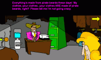
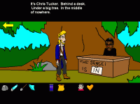
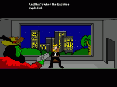
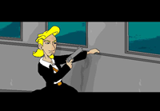

|
If you're looking for the original adventure game masterpiece by Ron Gilbert, you're out of luck. "M:I-2: LeChuck's Revenge" is a fast, furious "demake" of the classic PC game. Returning to the tri-island area with glorious low-res "Klik 'n Play" pastiche, you take wannabe pirate Guybrush Threepwood on his journey to find the lost treasure of Big Whoop. But THIS TIME, you're up against bad movie parodies, pop music MIDIs, off-brand cameos, and too many Matrix jokes!
M:I-2 will be the strangest game you might never put down. The whole game is available in 4.5 separate chapters, with the last one containing all the game's alternate endings. And a fair warning: the game does not feature a save mechanic, so set an hour aside for each chapter.
How do I get it running on modern systems?
Good question! This game was made on Windows 98 and I haven't gotten running on Windows 10 yet. It's mostly available here for posterity. If you figure it out, let me know and I'll graciously post it here with your credit. (Seriously, I can't even google it.)
Downloads
Part 1: Scabb Island
Part 2: Two Map Pieces
Part 3: The One with all the Toffee
Part 4: Guybrush Kicks @$$
Part 4.5: The Endings
Extras
Full Walkthrough to be added
GameDev Interview on "Threepcast" Podcast
|




|